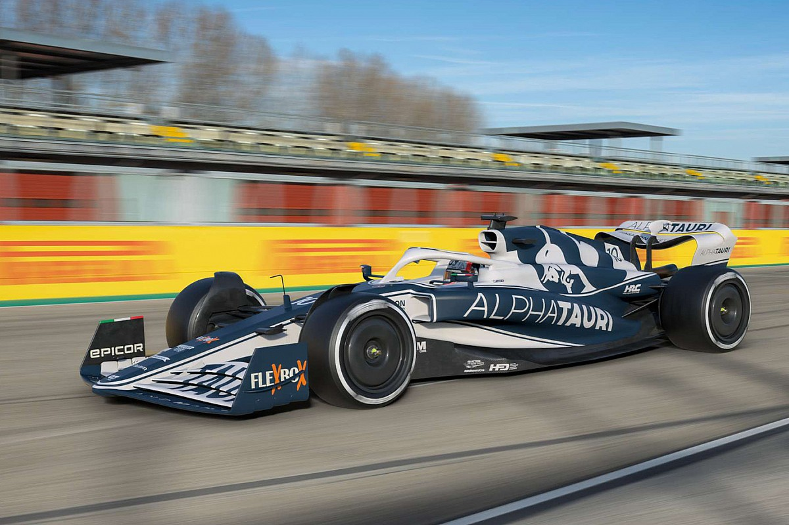
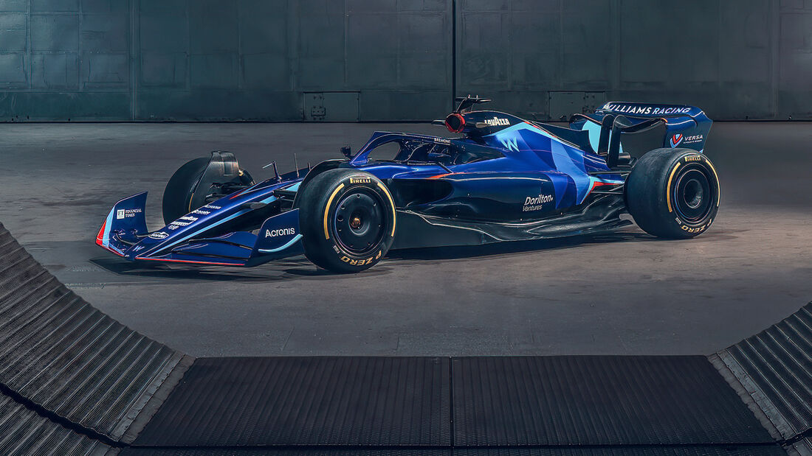
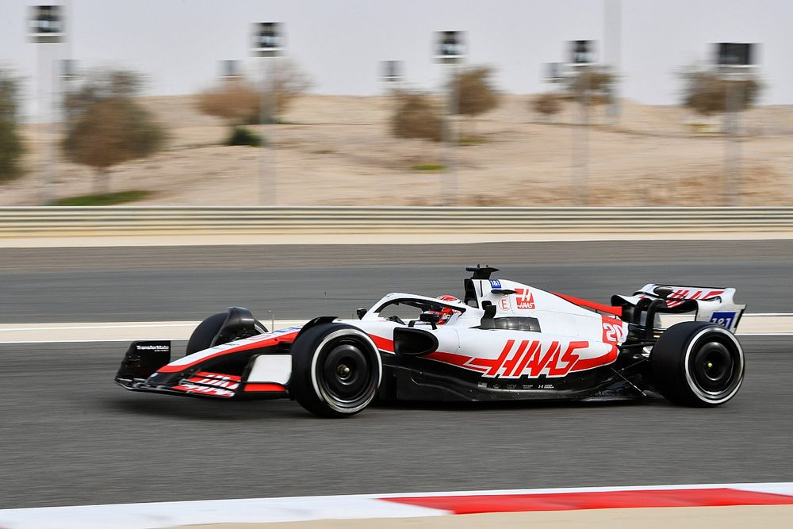

Mercedes W13
Mercedes AMG F1 Petronas es un equipo de origen alemán con sedes en Brackley y Brixworth, en Gran Bretaña. Originalmente Daimler poseía el 60% del equipo, Toto Wolff el 30% y Niki Lauda el 10%. Desde diciembre de 2020, el accionariado está compuesto por Daimler, Toto Wolff e Ineos a partes iguales.

RED BULL RB18
Red Bull Racing es un equipo privado de origen austríaco con sede en Milton Keynes, en Gran Bretaña. Es propiedad de la marca de bebidas homónima.

FERRARI F75
Scuderia Ferrari es un equipo de origen italiano con sede en Maranello, Italia. Es la escudería oficial del fabricante de automóviles Ferrari.

MCLAREN MCL36
McLaren es un equipo privado de origen británico con sede en Woking, Gran Bretaña. Es propiedad del Grupo McLaren, cuyo accionariado está compuesto por la corona de Baréin y Mansour Ojjeh.

ALPINE A522
La temporada 2021 para el equipo de Enstone empezó con el cambio de nombre de Renault a Alpine, y abandonando los colores amarillos para identificarse con el azul eléctrico en el regreso de Fernando Alonso a la F1, esta vez como compañero de equipo de Esteban Ocon. Desde el principio de la temporada quedó claro que los franceses no iban a estar a la altura de McLaren y Ferrari y que únicamente podrían conformarse con la quinta posición en el Campeonato de Constructores. También quedó claro que, al filo de los 40 años, Fernando Alonso no había perdido su toque, y en la primera clasificación del año se metió en Q3, mientras Ocon fue eliminado en Q1.

ALPHATAURI AT03
AlphaTauri Honda es un equipo privado de origen italiano con sede en Faenza, Italia. Es propiedad de la marca de bebidas Red Bull, que en 2020 ha rebautizado su filial Toro Rosso con el nombre de una marca de ropa de la compañía.
ASTON MARTIN AMR22
Tras ser conocidos como Racing Point pasado el periplo de Force India, antes de la temporada de 2021 el conglomerado de empresas de Lawrence Stroll compró la marca de coches de Aston Martin, y el canadiense decidió fundir sus dos negocios. Ya como equipo Aston Martin y el regreso del color verde a la parrilla de Fórmula 1, Stroll tuvo como pilotos a su propio hijo, Lance, y al tetracampeón del mundo Sebastian Vettel, que encontró una escapatoria en Aston Martin tras una salida por la puerta de atrás de Ferrari. El duelo de clasificación estuvo extremadamente igualado entre ambos pilotos, aunque en cuanto a los domingos, Vettel terminó con 43 puntos por los 34 de Stroll, gracias a la segunda posición que firmó el alemán en Azerbaiyán. También lo había conseguido en Hungría, pero el 5 fue descalificado por falta del mínimo de combustible al término de la prueba. Más allá de ese podio de Bakú y el Top 5 de Barcelona, Vettel solamente sumó puntos en cinco ocasiones. Stroll también vio su rutina más fuera que dentro del Top 10, en un año muy 'gris' en cuanto a rendimiento puro para los de Silverstone. Tanto fue así, que no solamente acabaron séptimos en el Mundial -tras luchar por ser terceros en 2020–, sino que fueron doblados en puntos por un equipo B como AlphaTauri y con 200 puntos menos que McLaren o Ferrari. La esperanza para Aston Martin, sin embargo, residía en el cambio de regulaciones de 2022 y junto a su reestructuración de la fábrica, el fichaje de ingenieros de renombre de los mejores equipos de la parrilla.

WILLIAMS FW44
Williams Martini Racing es un equipo privado de origen inglés con sede en Grove, Gran Bretaña. Cotiza en la bolsa de Frankfurt. Su fundador y accionista mayoritario es Frank Williams, que posee el 52,25% de las participaciones. El equipo Williams es una de las entidades con más historia en la Fórmula 1, con un legado que se remonta a la temporada 1977 y un nutrido palmarés compuesto por nueve títulos del Mundial de Constructores y siete del de Pilotos.
ALFA ROMEO C42
Alfa Romeo Racing es un equipo privado de origen suizo con sede en Hinwil, Suiza. Está constituido en sociedad anónima. Su accionista mayoritario es el grupo inversor Longbow Finance. Es fruto de la relación comercial entre el equipo Sauber F1 Team, que proporciona la fuerza logística, y la firma automovilística Alfa Romeo, que da nombre al binomio a través de un patrocinio.

HAAS VF-22
Haas F1 Team es un equipo privado de origen estadounidense con sedes en Banbury –Reino Unido– y Kannapolis –Estados Unidos–. Es propiedad de su fundador Gene Haas. Haas es la escudería más joven de la parrilla. Se constituyó en 2014 y empezó a competir en 2016. Debutó con un acuerdo de colaboración técnica con Dallara -que produjo su primer chasis- y Ferrari -que les permitió aprovechar algunos de sus componentes y recursos tecnológicos-.
